The documentaion for this week includes 2 main sections. The first one is a brief summary of how I assembled the 3D printer with Xenia; the second part includes the process of printing the 11 objects.
Assembling the 3D Printer
The model that we have is Creality Ender-3 Pro. We mostly followed a video tutorial that we found on Youtube. Most of the steps at the beginning were quite smooth, but we got stuck during step 8, where we weren't sure how the rubber band circled the rod. After repeating the video a few times, we figured it out and successfully assembled the 3D printer, as you could see in the image below.
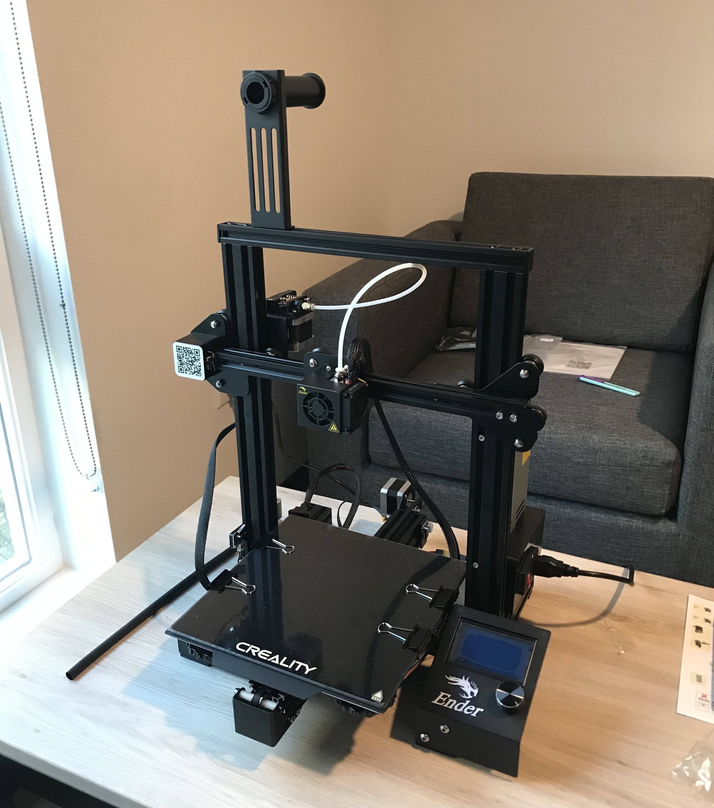Next, we followed the video provided by the instructor and started leveling the bed and testing it.
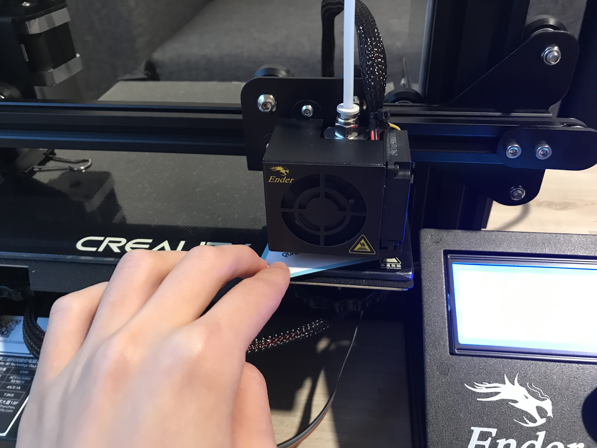Afterwards, we unpacked the filament that came with the 3D printer and hung it on the hook. And then, we had a difficult time figuring out how to insert the filament into the hole so it could feed into the tube. Eventually, things worked out and we were ready to start printing!
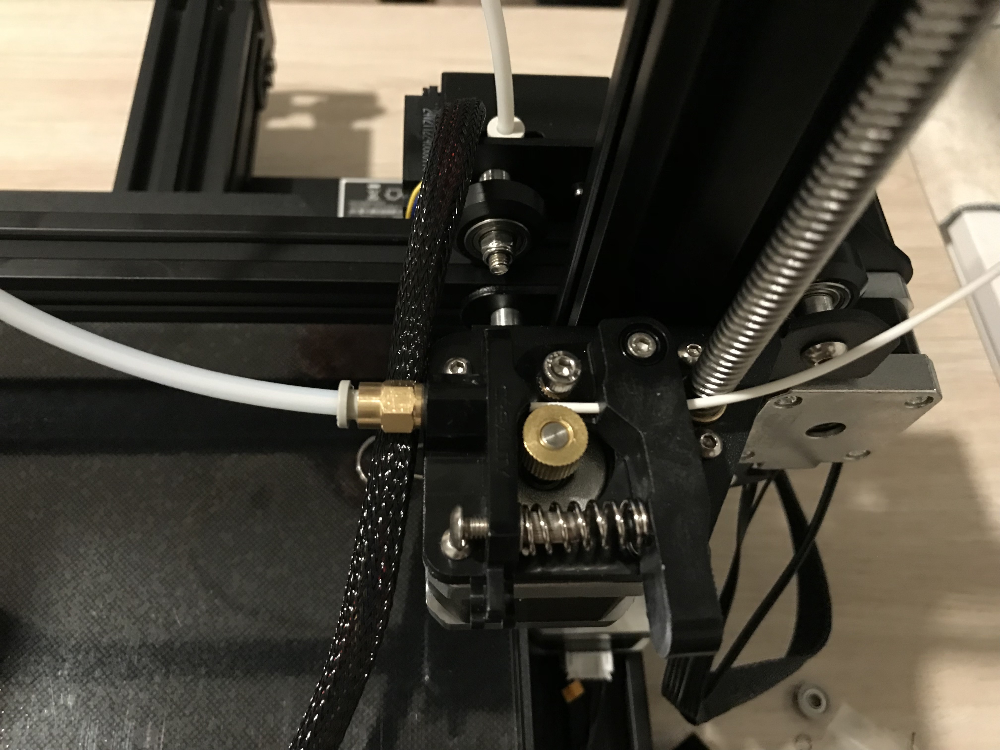Priting the Objects
For each of the 11 objects in the assignment, I included: (1)requirements; (2)estimated printing time in Cura; (3) actual printing time; (4) actual dimension measured using a electronic digital caliper;(5) other details; and (6)photos. Note, the source files will be included at the end of this section.
During the printing process, the begigest challenge that I encountered was leveling the bed. When the bed was not at the right height, the flament won't adhere to the bed and might glue together, causing the nozzle to be stuck. It's important to select the "brim" option for better adhesion. Below is a photo of an overview of my final ouput
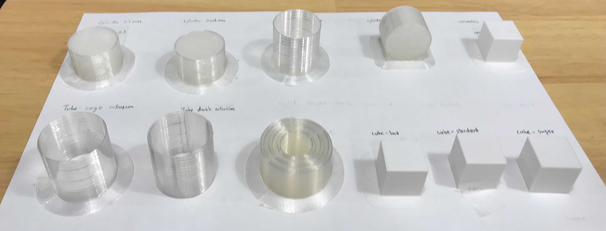Cube
Requirement: A 2cm cube with the standard "low quality" settings Estimated time: 22 minutes Actual time: 23 minutes 41 seconds Dimension: 20.1 mm * 19.9mm Note: I highly prefer low-quality since it's much faster than other options.
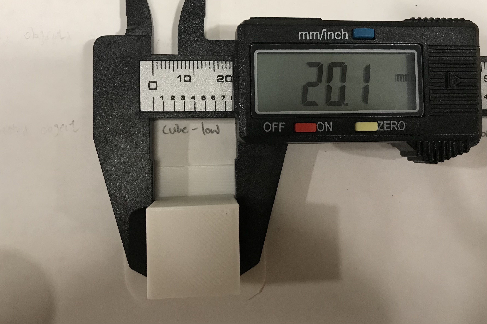 Requirement: A 2cm cube with the standard "standard quality" settings Estimated time: 25 minutes Actual time: 29 minutes 42 seconds Dimension: 20mm * 19.9mm Note: this one doesn't look different from the low-quality or the super-quality cubes 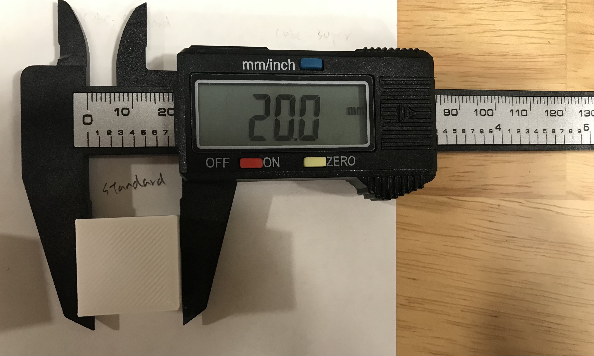 Requirement: A 2cm cube with the standard "super quality" settings Estimated time: 48 minutes Actual time: 36 minutes 14 seconds Dimension: 20mm * 19.9mm Note: This one took me twice; it was 19.6*19.8 for the first time 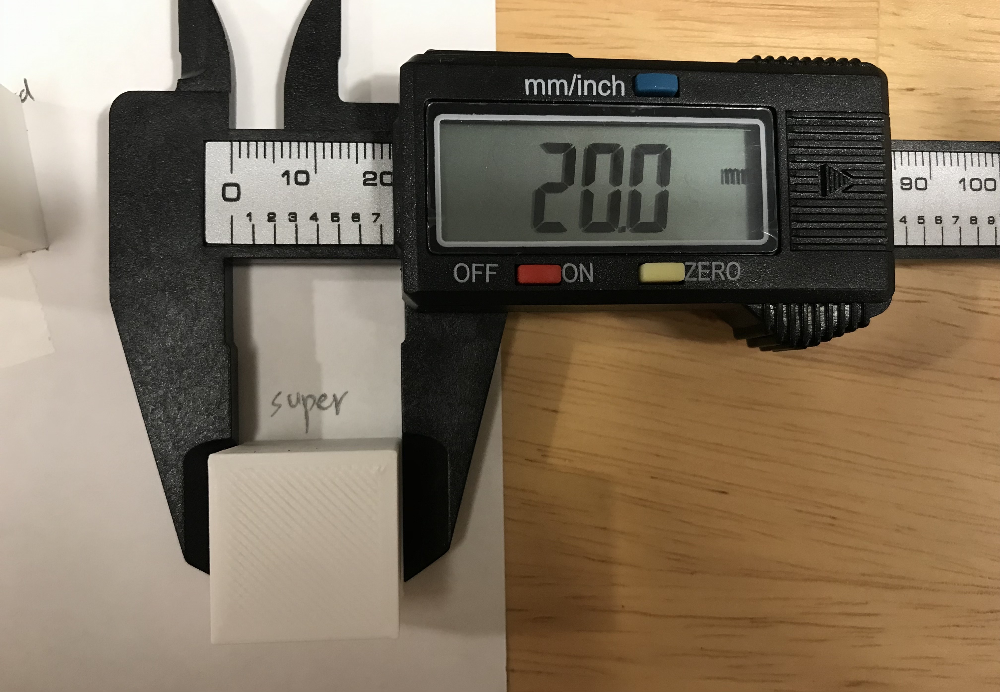 Requirement: A 2 cm cube with a concentric top and bottom layer and your favorite print setting from the previous cubes. Estimated time: 26 minutes Actual time: 21 minutes 47 seconds Dimension: 20mm * 20 mm Note: the top and bottom do look different from the other cubes. 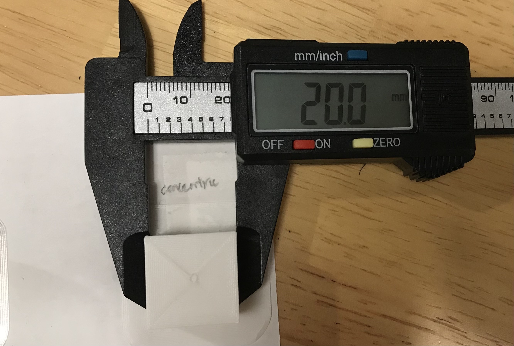Tube
Requirement: A tube 3cm in diameter and 3cm high with a single extrusion wall thickness Estimated time: 26 minutes Actual time: 23 minutes 32 seconds Dimension: 30.1mm * 30.1 mm Note: It took me 3 times to get the right dimension for this tube. It's important to change the infill to 0; line to 1; and select "brim."
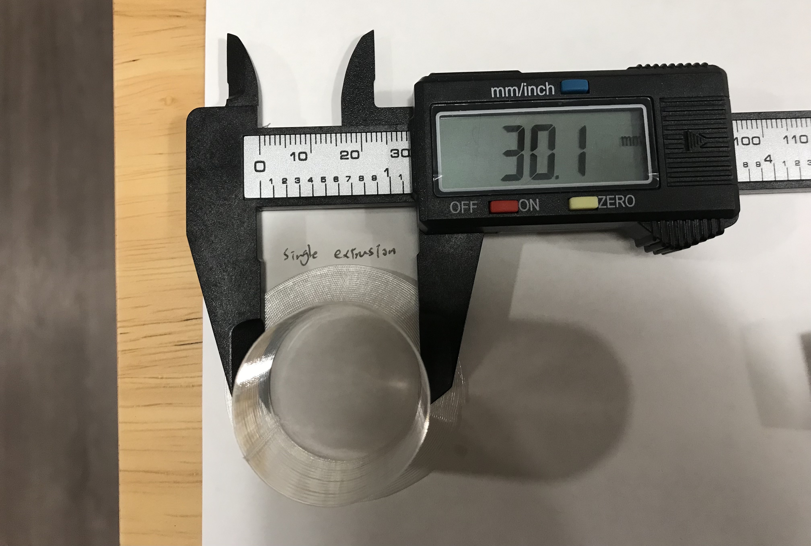 Requirement: A tube 3cm in diameter and 3cm high with a double extrusion wall thickness and random z-seam alignment Estimated time: 36 minutes Actual time: 28 minutes 51 seconds Dimension: 30 mm * 30.1 mm Note: this only took me once, because I've learned from my own mistakes when I printed the single extrusion tube. 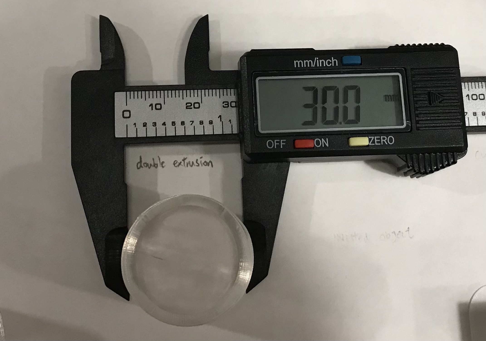Cylinder
Requirement: A cylinder 3cm in diameter exported with a 0.1mm tolerance Estimated time: 29 minutes Actual time: 28 minutes 10 seconds Dimension: 30 mm * 19.9mm Note: The diameter is the exact perfect size when I printed it for the first time
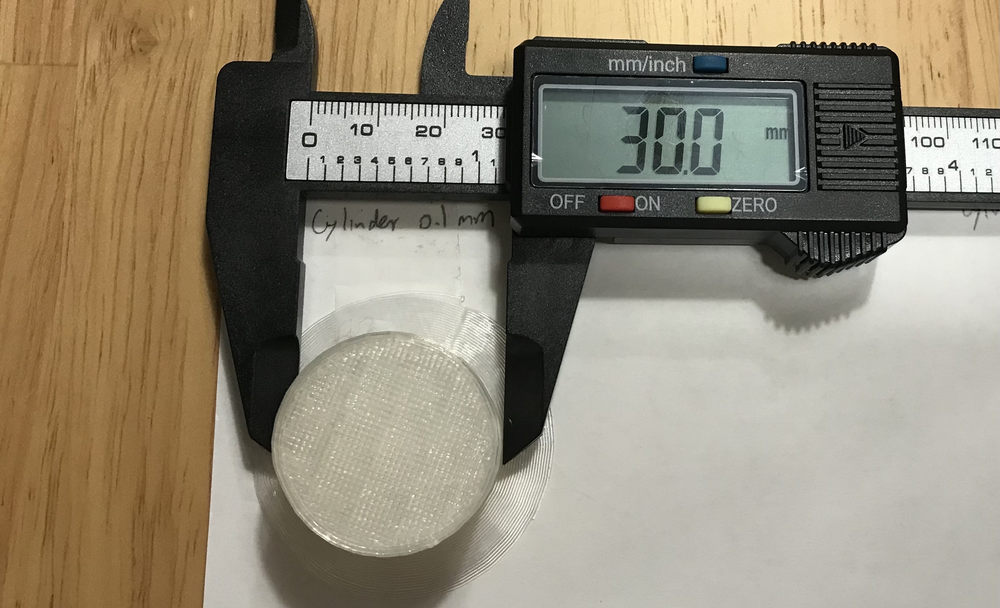 Requirement: A cylinder 3cm in diameter exported with a 0.001mm tolerance (height 2cm) Estimated time: 29 minutes Actual time: 28 minutes 52 seconds Dimension: 29.9mm * 19.9mm Note: It's interesting that the tolenrance at 0.1mm yields a more precise output than the tolerance at 0.001 mm. 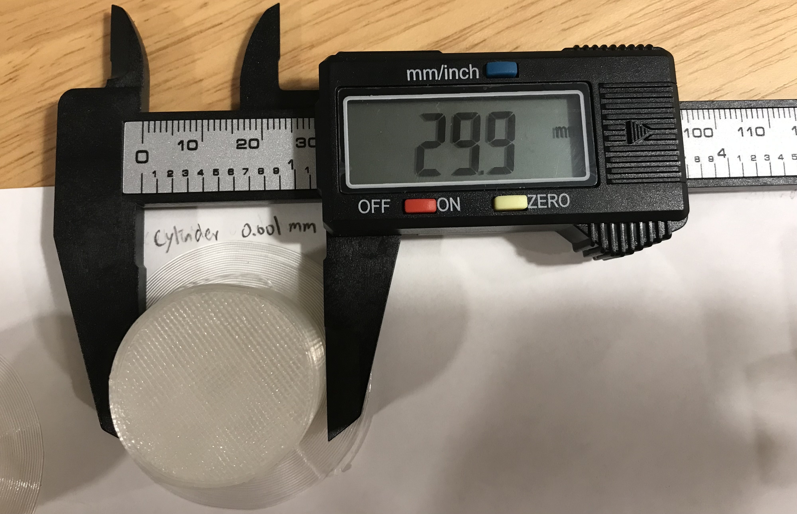 Requirement: A cylinder 3cm in diameter with special mode "spiralize outer contour (height 2cm) Estimated time: 23 minutes Actual time: 20 minutes 22 seconds Dimension: 20.1mm * 29.9mm Note: At first I was a bit confused about why this one looks like a tube instead of a cylinder. I thought I made some mistakes so I created a new Rhino file, but the output was the same 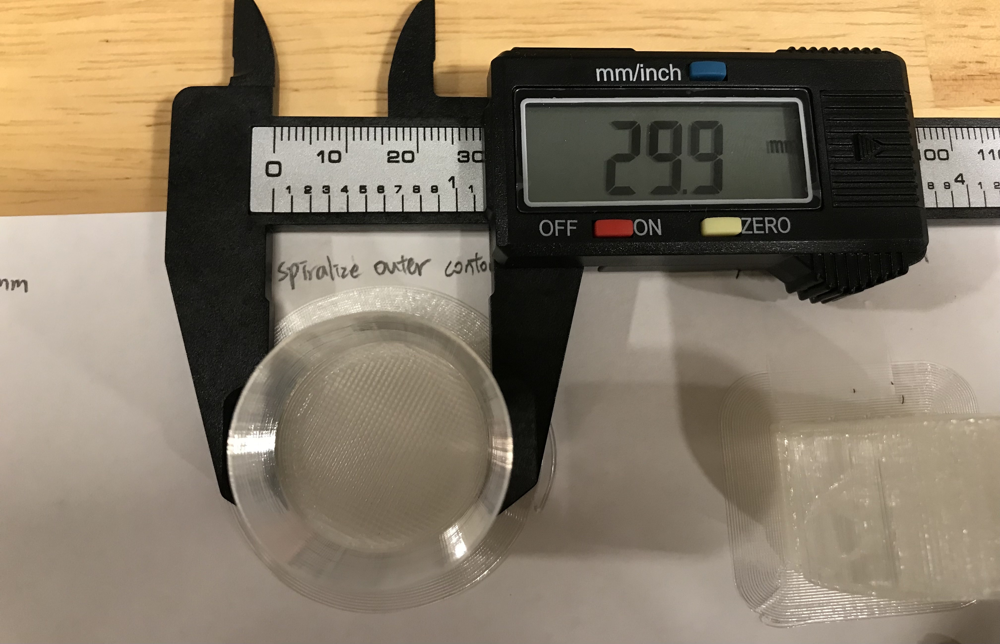 Requirement: A cylinder 3cm in diameter printed on its side with supports on (height 2cm) Estimated time: 39 minutes Actual time: 38 minutes 19 seconds Dimension: 29.9mm * 20mm Note: I selected a normal support structure which touches the buildplate. 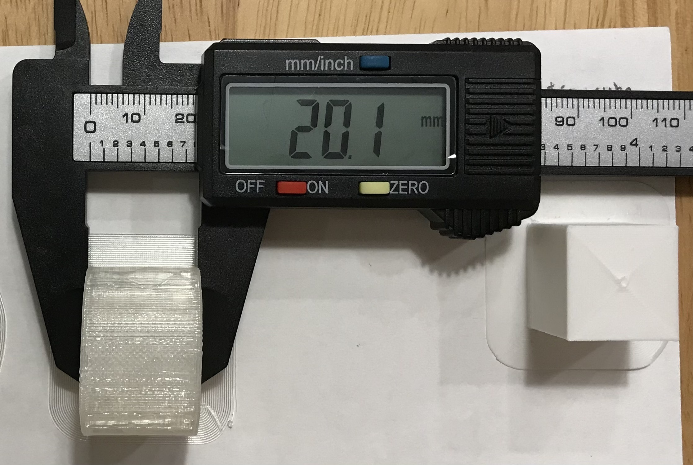Nested Object
Requirement: Have at least 3 nesting structures. Export the objects as one STL, and 3D print the nested structure. Estimated time: 1 hour 6 minutes Actual time: 1 hour 8 minutes 2 seconds Dimension: 35.9 * 20.01mm Note: I made 3 tubes with the height of 20 mm in Rhino and then exported the STL file to Cura.
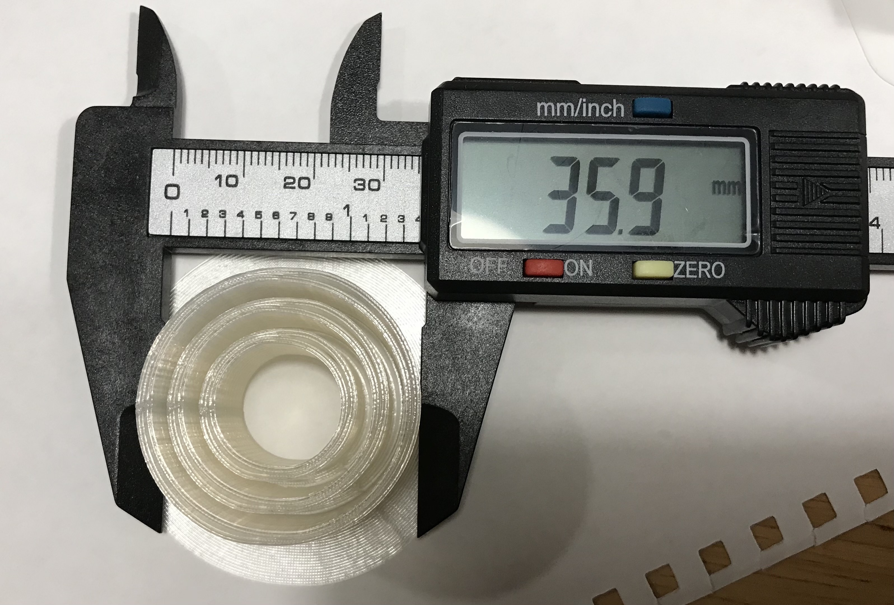-----
Below is the source file:
Rhino File-----
Grasshopper FileBiggest thanks to the 533 Support Group for all the help!